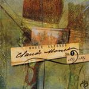

| Artist: | Douze Alfonso |
| Title: | Claude Monet Vol. 1 |
| Label: | Musea FGBG 4397.AR |
| Length(s): | 64 minutes |
| Year(s) of release: | 2002 |
| Month of review: | [09/2002] |
| 1) | Chemins Dans Les Falaises | 3.47 |
| 2) | Je Vous Écrivais | 3.53 |
| 3) | Giverny | 4.02 |
| 4) | Un Jardin Qui Ne Ressemble A Rien | 3.10 |
| 5) | Des Saisons Sur Les Toiles | 2.26 |
| 6) | L'Echappée Belle | 4.35 |
| 7) | Conflits | 2.59 |
| 8) | Les Beaux Jours De Giverney | 3.06 |
| 9) | La Fanfare Rouge | 3.10 |
| 10) | La Fantôme De L'île Aux Orties | 4.11 |
| 11) | Les Cathédrales Immergées | 5.05 |
| 12) | L'Oeil Cannibale | 1.37 |
| 13) | Antibes | 4.32 |
| 14) | Les Arcanes De L'Air Bleu | 6.34 |
| 15) | Errances | 3.37 |
| 16) | L'Âme De L'Hiver | 7.00 |
L'Echappée Belle is a bit more complex: classical and somewhat fragmentary in outset, a moody and spooky chamber orchestra with French influences becuase of the ever present (it seems) accordion. After the shortish, again somewhat classical, Conflits, we come to something akin to a chanson. Here again the band goes over from the prog path into something which is a bit too straightforward. Bleepy keys and dark thematic brooding themes we find on the next one, while romance returns on track ten.
A question and answer game betwee naccordion and percussion makes for a playful piece with bagpipes. Quite an exciting track this, featuring some gurgling keyboards. The vocal jazz is back on track twelve, think Astrud Gilberto here. Les Arcanes De L'Air Blue has both a bluesy feel in the guitar as well as an organ and a jazz vibe. After the open guitar sound on the penultimate track we get some melody revisiting on the final one.
The conclusion: I have given a quick rundown above of the tracks. What stays in my mind is that this is not really a progressive album at all. Most of the music is simply too laid back, or one might say too determined to be in the vein of being about something dating over a hundred years back. This leads to a kind of romantic music with only a few tracks being more progressive and demanding. It is all quite pleasant to listen to (except maybe the old style vocals on a few tracks), because the band does all this in a professional way throughout. On the whole though, there is too little that really grabs you.